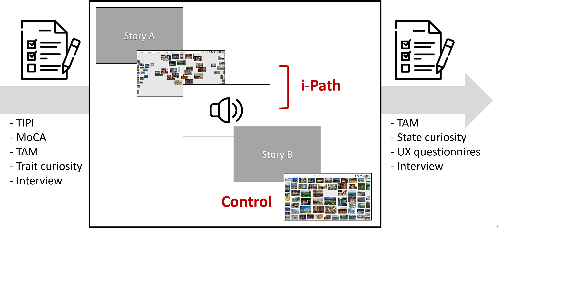
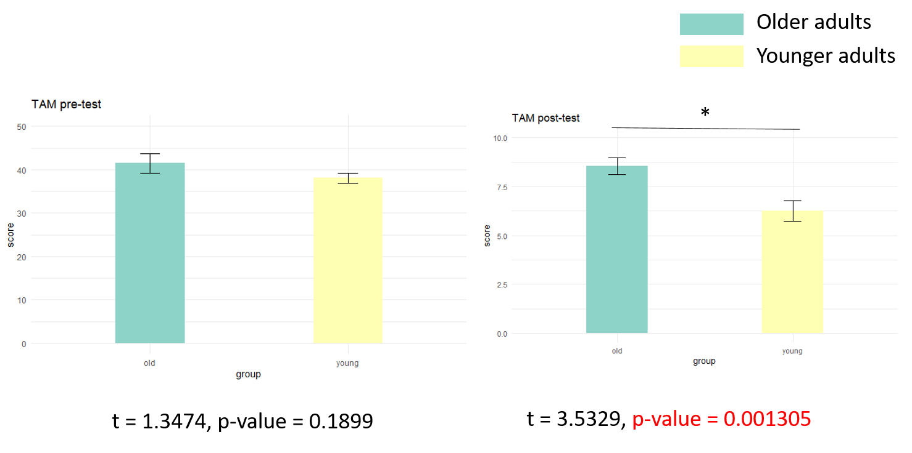
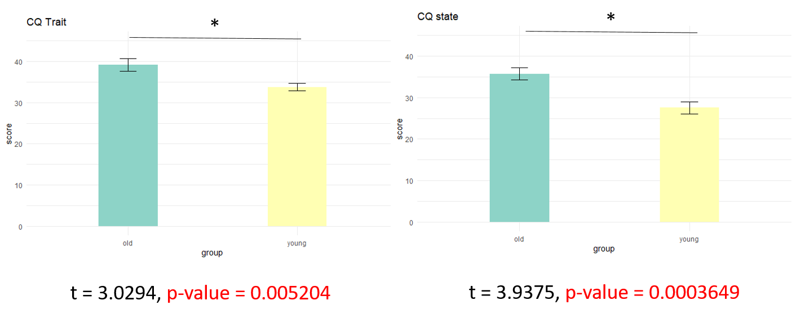
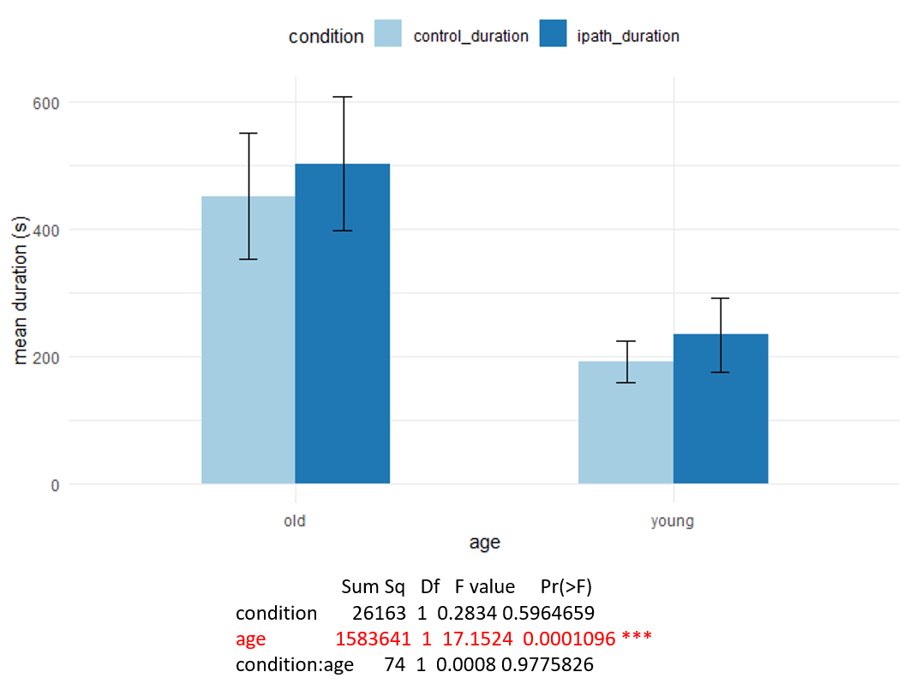

Collaborating with Yoshifumi Kitamura’s Interactive Content Design lab from Tohoku U, our engineering team developed a digitized storytelling system that aims to assist older adults with preserving their memory and improving mental health. Working as the lead UX researcher for this project, I conducted exploratory interviews for design research, along with usability testing and user interviews for the subsequent iteration of the alpha prototype. The research provides validation for i-Path’s functional goals as well as insights for future improvements to the alpha prototype.
Research Background
- Through the retrospective view on his or her life, the narrator can acquire resilience, wisdom, well-aging, and well-being (Pecorini & Duplaa, 2017 ).
- However, though the older adults are willing to share, there are often no listeners.
- Digital storytelling is good for the health (positive emotion and cognitive training) and for inter-generational interaction (attract listeners).
- Digital storytelling applies moving visual images, text, graphics, and audio components that produce a multimedia product for new or ‘remixed’ versions of stories (Hoechsmann et al, 2015).
Step 1: Exploratory Design Research
Exploratory Interview
We interviewed 20 older adults and concluded the following user needs:
- Need customized interface
- Prefer AI as a helper for digitalizing autobiography
- Want to share and listen to stories
- Want to preserve memories mainly by photos
Define Product Goals
Based on the user needs identified during the interviews, we have defined the three primary goals of the product:
- Attract listeners
- Help users tell their stories by using active photos
- Preserve knowledge and skills
The Alpha Prototype
The engineering team develop the Alpha prototype with the three main functions - dynamic display, record playback, and voice control - corresponding to the three primary goals defined from to the interviews.

Step 2: Evaluative research - Usability testing, Surveys, and User Interview
Research Questions
-
Did i-Path achieve its three primary goals?
- Can users experience self-actualization, self-esteem, or a sense of love and belonging through their interaction with i-Path?
-
Did the three main functions play their roles in supporting our primary goals?
-
Did individual differences, including technology acceptance, age, and personality, affect users' attitudes toward the prototype?

Research Design

We adopted a within-subject design considering the number of subjects, participation time, and individual differences. The order was counterbalanced using a Latin square to mitigate learning effects. Each participant would initially undergo a session of surveys and interviews as a pre-test.
Subsequently, they will interact with i-Path in both control and treatment conditions. In both conditions, participants were asked to talk about their stories based on cues provided by the storytelling system, with 63 pictures shown. Among these pictures, 18 were provided by the participants, while 45 were unrelated to their personal experiences. The difference lies in the control condition where the pictures are static, and there is no voice control, whereas in the treatment group, participants interact with i-Path featuring voice control, interactive display, and reply functions.
The order of interaction corresponds to the group to which they were assigned. After the interaction, a session of surveys and interviews will be applied as a post-test.
Methodology
Surveys and interview were the main methodology we adopted in this research. We use surveys to get some quantitative measure of attitudes and acceptence. Interview is where we get qualitative data to understand deeper into users usage habit of autobiography, how they record their life, and the jobs-to-be-done of the other narrative tools they used.
We used some predeveloped questionaire to measure personality as well as a self-design survey to measure specific questions we want to uderstand regarding i-Path.
- Ten Item Personality Measure (TIPI)
- Montreal Cognitive Assessment (MoCA )
- Technology Acceptance Model (TAM)
- State / Trait curiosity
- self-design survey
Results
Technology acceptance 
- Pre-test focus on general technology(left) and post-test focus on i-path(right)
- Pre-test shows that there is no difference in the acceptance of general technology between older and young adults
- Post-test shows that older adults have a hight acceptance on i-path
Curiosity

- Pre-test(green) / post test(yellow)
- Trait curiosity(left) / state curiosity(right)
- Older adults self report both higher trait curiosity and state curiosity
Self-design Surveys - Product Goals

- Older adults have a more positive feelings toward i-path comparing with young adults
- The questionnaire is divided into 5 constructs: Attract listener, Assist story telling, Love and belonging needs, Self- esteem, Self-Actualization (Love and belonging needs, Self- esteem, and Self-Actualization are for measuring wisdom preservation)
Self-design Surveys - Functions

- Young adults have a lower rating comparing with older adults
Behavioral Data (Interaction Time) 
- The time each users interacted with i-path was recored (maximun 30 minutes)
- In average, olders adults spent more time interacting with i-path, however, there is no significant differnece in the interaction time between i-path and control group, indicating that the three main functions of i-path do not increase the time of usage of older adults
Conclusion
-
The research provides proof-of-concept that we successfully tailored the system for seniors. The evaluative research shows that older adults self-reported higher acceptance and curiosity over i-Path. Although the elderly did not spend significantly more time in the i-Path condition than in the control condition, the self-report results still support our idea to some extent.
-
The prototype demonstrates its value in achieving some of the product goals for seniors. Among the three product goals, attracting listeners and assisting storytelling are areas where users feel more profoundly engaged, although the prototype fails to significantly support love and belonging, self-esteem, and self-actualization.
-
Functions still need improvement. While older adults are more satisfied with the product functions than younger people, the absolute ratings are not high. Combining the results from the interviews, we found that older people like the voice control and interactive display functions, despite occasional issues. The record & playback function is where most people are dissatisfied. Despite recording sound, recording the display as well can provide a more vivid digital biography, pointing out a space for future improvement.
References
1. Pecorini, B. C., & Duplaa, E. (2017). Narrative Gerontology and Digital Storytelling: What Benefits for Elders. MOJ Public Health, 6(6), 00192. 2. Hoechsmann M, De Waard H (2015). Define digital literacy policy and practice in the landscape of Canadian education. Media Smarts, Canada, 1-75. 3. Vi, C. T., Takashima, K., Yokoyama, H., Liu, G., Itoh, Y., Subramanian, S., & Kitamura, Y. (2013). D-flip: Dynamic and flexible interactive photoshow. The International Conference on Advances in Computer Entertainment Technology, Springer, Cham.